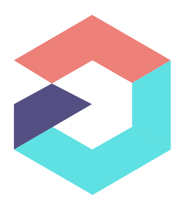

Co-founder & CTO - Seals AI (YC S24)
I lead technology and product execution, turning vision into scalable systems and reliable delivery.
 Heber Uriegas
Heber Uriegas
Scroll down to enter the website
I am Heber Uriegas - father, co-founder and cto. I believe software is the most powerful channel to improve lives at scale, and I build with passion, curiosity, ingenuity, hard work, and integrity.
/about
I am a technology leader and builder focused on creating meaningful impact through software. Today, I am cto and co-founder at Seals AI (YC S24). Previously, I was Head of Engineering at Orchata (YC S20) and cto at Prysmex.
Across these roles, I have led teams, shipped products, and built systems that turn ambitious ideas into reliable outcomes. Fatherhood shapes how I build: with long-term thinking, responsibility, and care for people.
/experience
I lead technology and product execution, turning vision into scalable systems and reliable delivery.
I led engineering strategy, team growth, and product development to support business scale.
I directed technical architecture and execution, building solutions focused on real operational value.
/values
I bring energy and commitment to every product and team I build.
I ask better questions, learn fast, and challenge assumptions.
Like bees that fly with small wings, ingenuity thrives under constraints: many limits are self-imposed, and constraints can become the catalyst for innovation.
I execute with discipline, consistency, and ownership.
I choose transparency, accountability, and what is right over what is easy.
/work
I build and scale products with a focus on impact, speed, and reliability.
Current
Building an AI-native ERP powered by AI Employees that automate workflows and support teams across operations.
Impact: Driving reliable execution from roadmap to production.
Leadership
Led engineering systems, team growth, and architecture decisions to sustain product velocity.
Impact: Improved team execution and supported business growth.
Operations
Directed technical strategy and product architecture around operationally meaningful outcomes.
Impact: Built dependable software aligned to business needs.
/projects
Ideas and initiatives I am exploring next. This section is ready to grow as new projects are defined.
Overview: A SaaS platform with a Discord bot that helps teams create and manage clans, strengthen community, and improve competitive coordination.
Stage: Live
Overview: An Android and iOS application focused on safer, more intentional digital experiences for families and kids.
Stage: On review

Overview: An AI agent tool for sellers in home design and finishes that creates interior design proposals and helps close deals faster.
Stage: Building
Overview: An AI-native mobile coding platform concept that lets builders design, generate, and ship software directly from their phones.
Stage: Concept
Overview: An AI-assisted code review workflow concept for catching issues in AI-generated code faster before production.
Stage: Concept
Overview: An AI agent for Mexico that automates factura creation and makes tax paperwork faster to handle.
Stage: Concept
Overview: An AI agent concept that helps households hire trusted plomeros, electricistas, carpinteros, and herreros.
Stage: Concept
Overview: A SaaS concept for remote teams to strengthen bonds through coordinated digital activities and games.
Stage: Concept